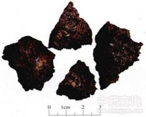

干漆

拼音
Gàn Qī
别名
漆树
来源
本品为漆树科漆树属植物漆树Toxicodendron vernicifluum（Stokes）F.A.Barkl. 的树脂经加工后的干燥品。一般收集盛漆器具底留下的漆渣，干燥。
生境分布
多生于向阳避风山坡。分布甘肃、陕西、山西、河南、山东、江苏、浙江、安徽、江西、湖北、四川、云南、贵州、广东等地。
药材特点
漆树（《蜀本草》）又名：山漆、渣苗。 落叶乔木，高达20米。树皮幼时灰白色，平滑，者则深灰色，粗糙，成不规则之纵裂。幼枝有柔毛，后渐脱落。冬芽生枝顶。单数羽状复叶，螺旋状互生，长22～75厘米；叶柄长5～9厘米，基部膨大；小叶11～15，卵形或长方状卵形，长7～15厘米，宽3～7厘米，先端长尖，基部广楔形或不整齐圆形，全缘；上面无毛或中脉生微毛，下面初有细毛，老时沿脉密生淡褐色毛；小叶柄短。花单性或两性；雌雄异株或杂生；花序圆锥状，腋生；花梗具短柔毛；花密而小，黄绿色；雄花花萼5，长圆形，花瓣5，长方状卵形，有紫纹，雄蕊5，着生于花盘边缘，花丝短，具退化子房；雌花雄蕊较小，子房1室，花柱短，柱头3裂。果序下垂，核果扁圆，直径6～8毫米，黄色。花期5～6月。果熟期11月。
性状
本品呈不规则块状，黑褐色或棕褐色，表面粗糙，有蜂窝状细小孔洞或呈颗粒状。质坚硬，不易折断，断面不平坦。具特殊臭气。
性味
辛，温；有毒。
功能主治
破瘀血，消积，杀虫。用于妇女闭经，瘀血症瘕，虫积腹痛。
用法用量
2.4～4.5g。
化学成分
干漆是生漆中的漆酚在虫漆酶的作用下在空气中氧化生成的黑色树脂物质。
药理作用
1：无药理作用数据
摘录
《中国药典》